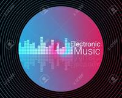

Thibo Verstraete
%20(1)%20(1).jpg)
Mijn 3 hobbies zijn:
ik heb geen favoriete muziekgroep
Electronische muziek
Gran Turismo

| Campus | Study areas | Phone number | Fax | Website | ||
|---|---|---|---|---|---|---|
| Kortrijk | Doorniksesteenweg 145 8500 Kortrijk | Commercial Sciences, Business Management and Informatics | +32 56 26 41 80 | +32 56 51 58 02 | hwb.kortrijk@vies.be | HW&B |
| Health care | +32 56 25 41 10 | +32 56 20 46 89 | gez.kortrijk@vives.be | Gezondheidszorg | ||
| Applied Social studies | +32 51 26 41 50 | +32 51 21 58 03 | saw.kortrijk@vives.be | SAW | ||
| Applied Engineering and technology | +32 56 50 41 20 | +32 56 50 98 67 | iwt.kortrijk@vives.be | IW&T | ||
| Roeselare | Wilgenstraat 32 8800 Roeselare | Biotechnology | +32 51 23 23 30 | +32 51 22 82 58 | bio.roeselare@vives.be | BIO |
| Torhout | Sint-Jozefstraat 1 8820 Torhout | Education | +32 50 23 10 30 | +32 50 23 10 31 | ond.torhout@vives.be | onderwijs |
De Hogeschool VIVES is actief in zes studiegebieden
Aan het studiegebied Handelswetenschappen en bedrijfskunde kan je volgende professionele bachler diploma's behalen: